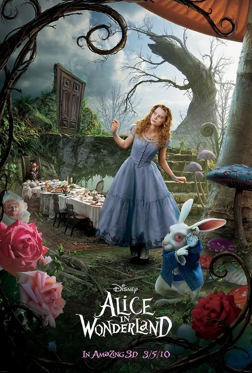
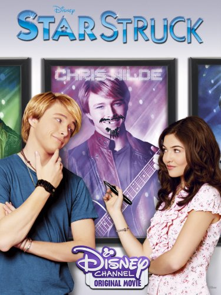
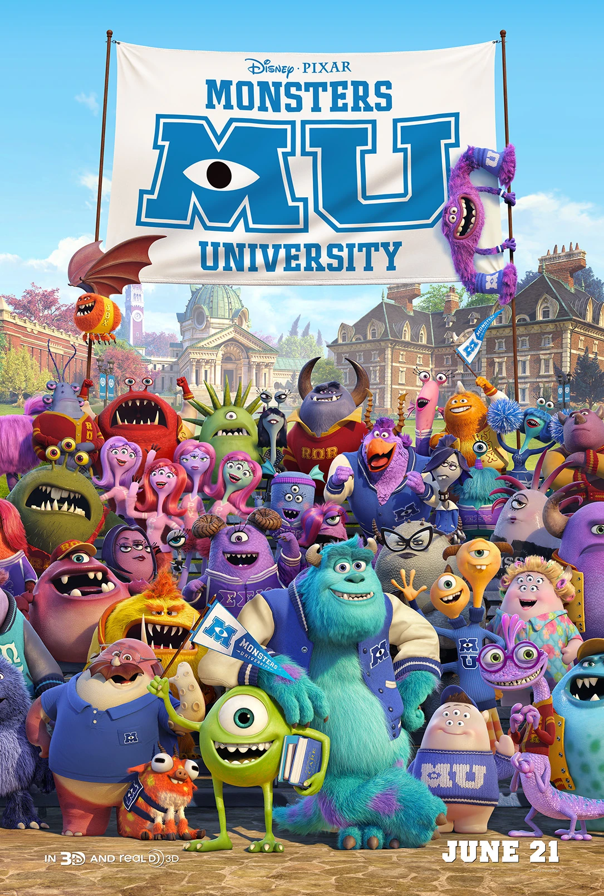

King kong 2005 edition with Jack black

King Kong (2005) is about a film crew led by a director who travels to the mysterious Skull Island, where they capture a giant ape named Kong
Jurassic park franchise 2015 movie

The movie is about the opening of a new dinosaur theme park, Jurassic World, which is threatened by a genetically engineered hybrid dinosaur.
The Nightmare Before Christmas

Bored with Halloween, Jack Skellington, the Pumpkin King of Halloween Town, discovers Christmas Town and becomes obsessed with it.
Alice in the wonderland with Jhonny deep
Alice in Wonderland is about a young girl named Alice who follows a White Rabbit down a rabbit hole into a bizarre and nonsensical world
Bride Wars with Anne Hathaway

two best friends, Liv and Emma, become rivals when they discover their dream wedding venues have double-booked them for the same day.
Endgame marvels final movie for the advengers

After Thanos snaps away half of all life, the remaining Avengers attempt to reverse his actions by using time travel to gather the Infinity Stones from the past
Devil wears prada with Anne hathaway

Andy is a recent college graduate with big dreams. Upon landing a job at prestigious Runway magazine, she finds herself the assistant to diabolical editor Miranda Priestly.
Star struck disney channel movie
A Midwestern girl goes to Los Angeles with nothing more in mind that visiting her grandparents while her sister tries to meet her idol.
Monsters inc where they go to the university
a prequel that tells the story of how Mike Wazowski and James P. "Sulley" Sullivan first met as rivals at Monsters University, a top-tier school for "scarers".
Toy story two where woody gets taken

Woody is stolen by a toy collector named Al, who discovers Woody is a valuable collectible from a 1950s TV show
Coco the pixar movie about a singer

Coco is about a young boy named Miguel who is accidentally transported to the Land of the Dead on Mexico's Day of the Dead.